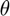
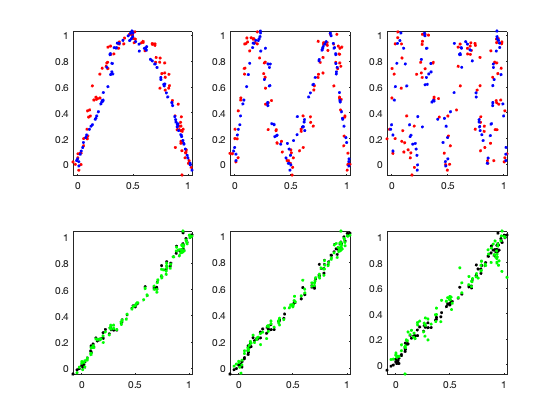

Contents
Simulate Discrete Logistic Map
T: length of series
r: set to 4 for chaotic dynamics
obs: noise added as a percent of the variation in x.
Y: stores observed data, XP: smoothed time series, X_pred : Forecast
Add observation noise to the deterministic system to create Y the observed data
addpath '/Users/dylanesguerra/Desktop/HMS_map/main' T = 100; r = 4; x = rand(T, 1); for t = 1:(T-1) x(t+1) = r * x(t) * (1 - x(t)); end obs = 0.1; Y = x + obs * std(x) * randn(length(x), 1);
Apply HMSmap to Time Series
step: sets how many steps ahead to forecast.
f_nn uses the false nearest neighbors algorithm to estimate the Embedding Dimension of each series from the observed data, (Kennel et al., 1992)
The optimal  is determind based on minimizing the observation error of the furthest step ahead forecast with fminbnd.
[FNN] = f_fnn(Y, 1, 10, 15, 2); [~, E] = min(FNN); noise = (obs .* std(x)).^2; step = 3; fun = @(z) HMSmap_lags(Y, 'gaussian', z, noise, E-1, 1, 0, step,[]).oe(step); z = fminbnd(fun, 0, 50); out = HMSmap_lags(Y, 'gaussian', z, noise, E-1, 1, 1, step,[]); XP = out.states; Theta = z; Coefs = out.coef; X_pred = out.pred;
Figures
By setting the figs parameter of HMSmao_lags.m to 1 rather than zero some diagnostic plots are automatically created.
HMSmap_lags(x,model,kernel,theta,vobs,E,tau,figs,stepsahead,inits)
Top row plots observed data in red and smoothed data in blue. The data is plotted against a time lag x(E:T-k),x(E+k:T) to show an emndedding of the data in 2d space k steps ahead. Bottom row plots observed data vs smoothed data in black and the observed data vs predictions in green at each step ahead.
Lyapunov Exponent Calculation
The Lyapunov Exponent is estimated with the lyapunov_QR_lags function taking in the coeficients of HMSmap as well as the embedding dimension. This is the Jacobian method of LE estimation using the coefficients of local linear regression in place of partial derivatives,(Deyle et al., 2016b).
Lyp = lyapunov_QR_lags(Coefs, T-(E-1), E-1)
Lyp =
0.4930
Error Calculation
Compare the smoothed time series to the noise free data to get the filtered error Filter_err.
This should be significantly lower than the added observation error obs
Filter_err = sqrt(mean((XP(2:T) - x(2:T)).^2) / var(x(2:T))) % Calculate filter error
Filter_err =
0.1133